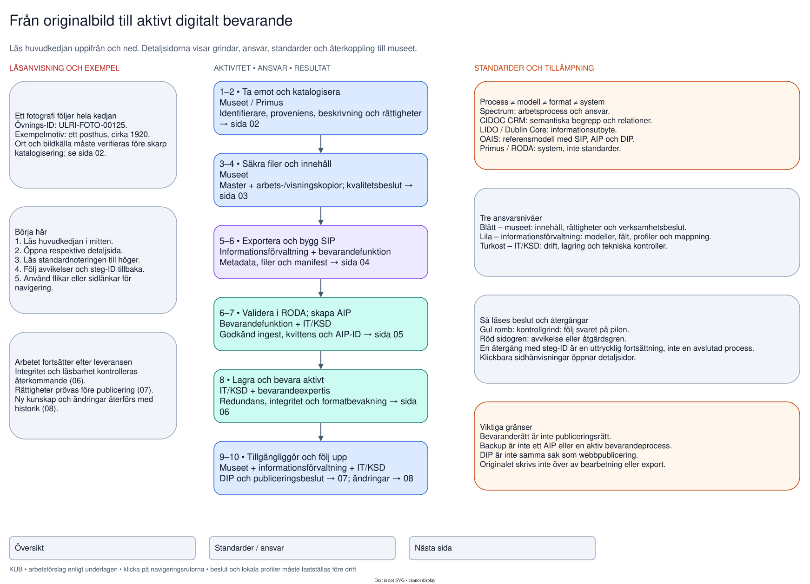
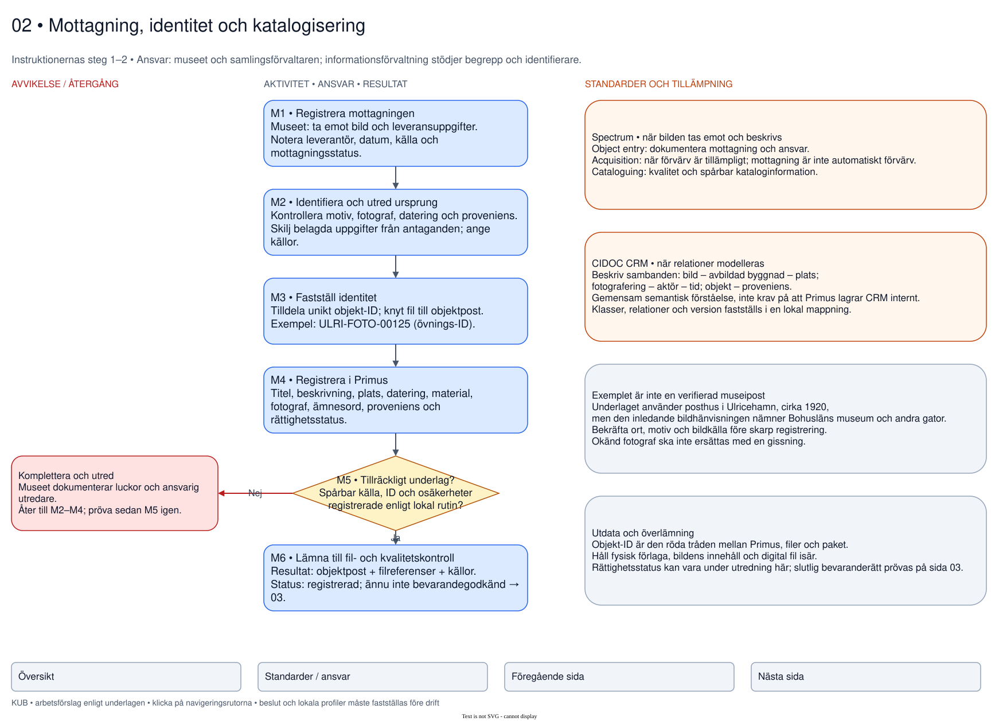
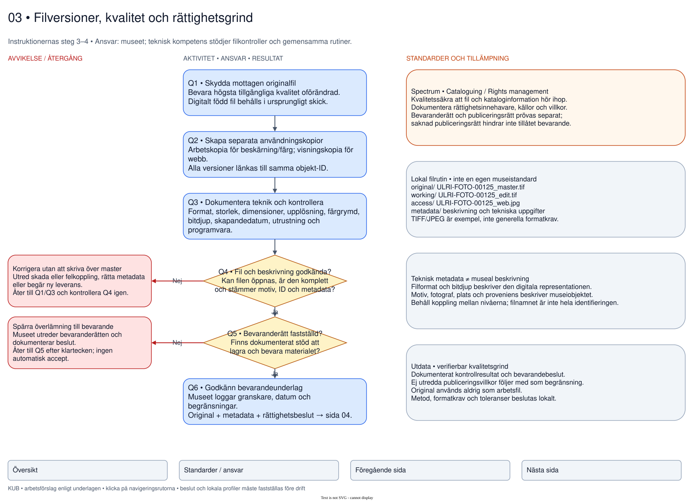
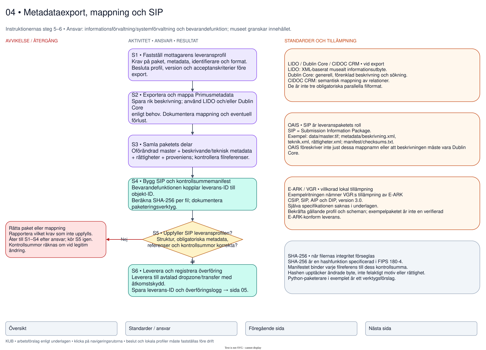
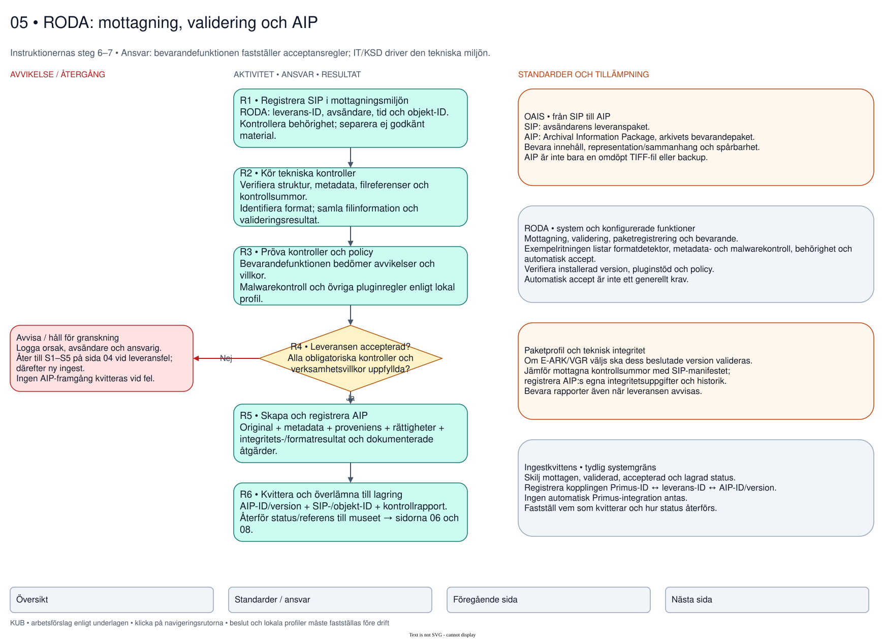
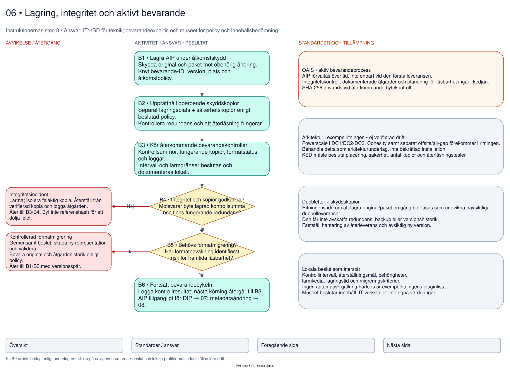
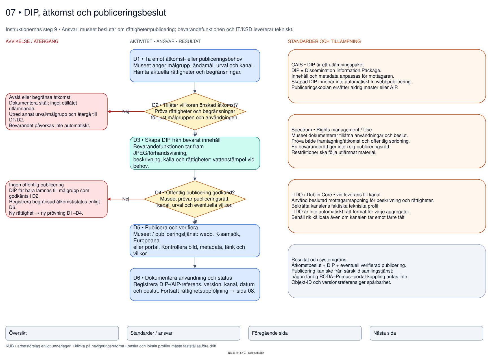
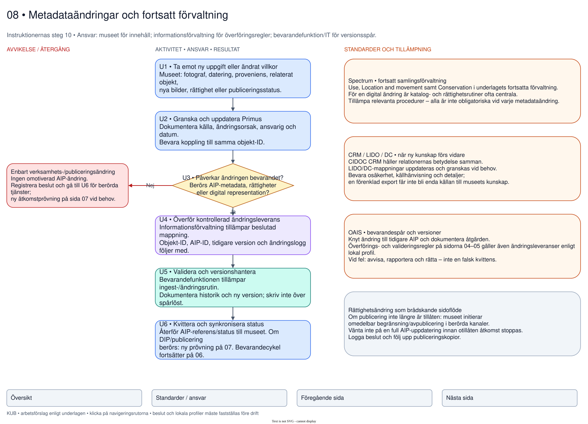
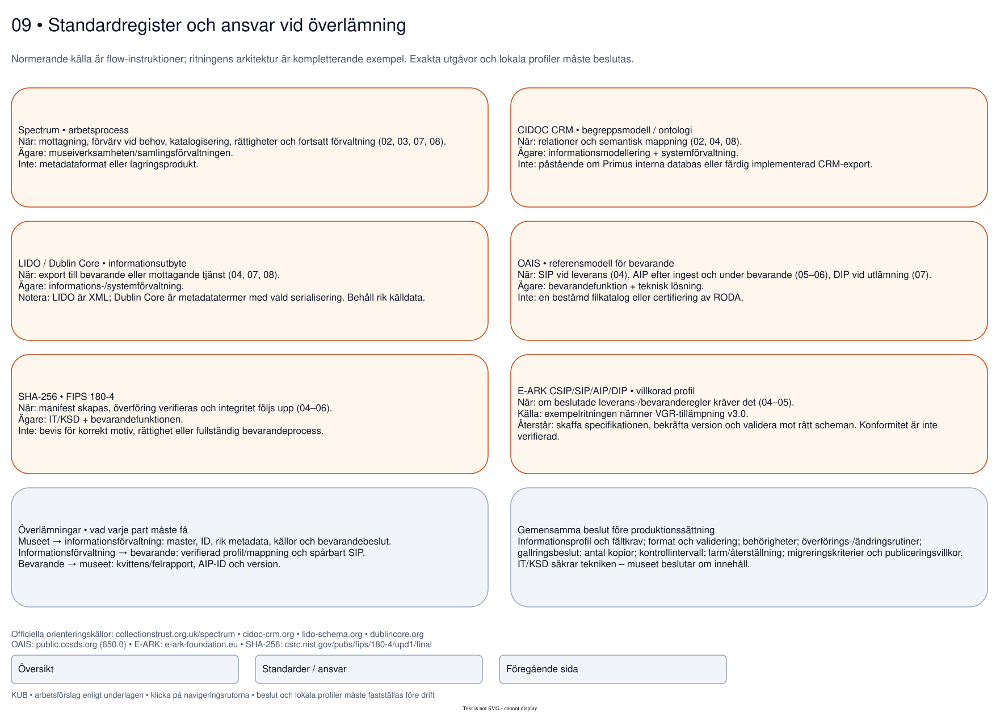

01 · Översikt

02 · Mottagning och katalogisering

03 · Filer och kvalitetsgrind

04 · Metadataexport och SIP

05 · RODA ingest och AIP

06 · Lagring och aktivt bevarande

07 · DIP och publicering

08 · Ändringar och återkoppling

09 · Standarder och ansvar
